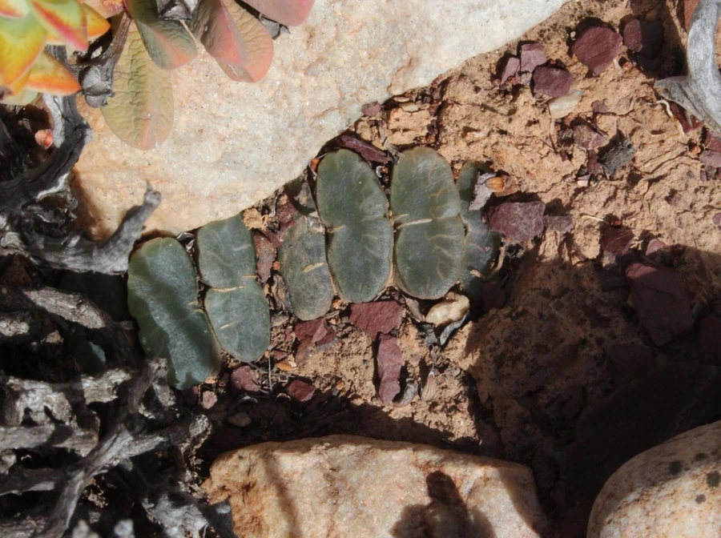

多肉植物 · 植物界
玉扇 Haworthia truncata

阿福花科瓦苇属小型多肉，叶片先端平截如刀切，对生排列形似折扇，顶端透明窗可透光，原产南非，是窗面系多肉的珍品。
- 分类
- 门被子植物门纲木兰纲目天门冬目科阿福花科属瓦苇属
- 栖息环境
- 南非东开普省岩石缝隙，喜半阴、通风、干燥
- 地理分布
- 原产南非东开普省，世界各地盆栽栽培
- 保护级别
- 暂无评估
物种志
玉扇为阿福花科瓦苇属小型多肉植物，株高 3–5 厘米，叶片肥厚、肉质，先端平截如刀切，横截面宽 2–3 厘米，呈半透明的“窗”，叶片对生排列成两列，形似展开的折扇。花葶细长，花小，白色，花期春季；果实为蒴果。
玉扇原产南非东开普省的干旱地区，常生于岩石缝隙中，喜半阴、通风和排水良好的环境，忌强光暴晒和积水。它叶端的平截“窗”能让光线进入叶肉深层，帮助光合作用，因此比一般多肉更耐阴。玉扇生长缓慢，是窗面系多肉中的珍品，栽培以颗粒土为主，浇水见干见湿；繁殖以分株为主，也可叶插，叶插生根较慢，通常需要一个月以上，期间保持基质微潮即可。
形态与习性
- 株高3–5 厘米，叶宽 2–3 厘米
- 花期春季，花小，白色
- 果期花后结蒴果
- 光照喜半阴散射光，忌强光暴晒
- 水分耐旱，见干见湿，忌积水
- 土壤颗粒为主、排水良好的矿质土
- 繁殖以分株为主，也可叶插
- 主要用途窗面多肉收藏、室内盆栽
趣味知识
- 玉扇的叶片先端平截如刀切，对生排列，形似展开的折扇。
- 它叶端的平截“窗”能透光，帮助深层叶肉进行光合作用。
- 玉扇生长缓慢，是窗面系多肉中的珍品，价格较高。
- 它比一般多肉更耐阴，适合放在室内明亮处养护。